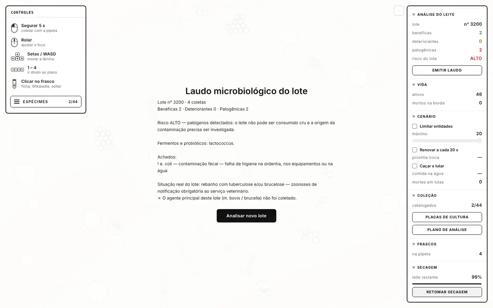
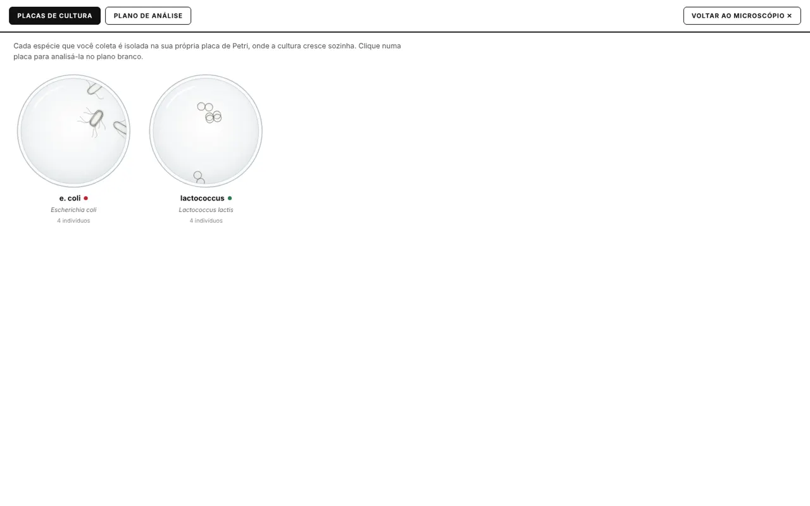

MICROCOSMO
Um microscópio digital que vê o invisível no leite antes que ele chegue à mesa.
O perigo não
se vê a olho nu
A ideia nasceu de um microscópio virtual de água e solo. Levamos para a indústria: no leite cru, bactérias que fazem bem e bactérias que adoecem pessoas e animais dividem a mesma gota — e ninguém vê nenhuma delas.
Lotes reprovados, leite que estraga antes da validade, casos de intoxicação
É o que a fábrica enxerga: o problema já aconteceu.
Microrganismos invisíveis entrando pela ordenha, pela mastite e pela refrigeração
E uma análise lenta, que só descobre depois que o lote já foi processado — expondo o técnico que manipula amostras com patógenos.
limite de bactérias no leite cru refrigerado (IN 76/2018, MAPA)
limite de células somáticas — acima disso, sinal de mastite no rebanho
uma contagem tradicional em placa precisa de dias de incubação
Brucella e M. bovis: zoonoses que podem infectar quem manipula as amostras
Como fizemos
- Lâmina digital com 4 planos de foco (água, solo e leite)
- Captura e identificação de cada microrganismo
- Classificação: benéfico · deteriorante · patogênico
- Cálculo do risco do lote e laudo microbiológico
- Placas de cultura e plano de análise (isolamento)
- Coleta da amostra no caminhão-tanque, na recepção
- Preparo da lâmina e microscopia real
- Uso de EPI e descarte de resíduo biológico
- Pasteurização ou descarte do lote
- Notificação oficial ao serviço veterinário
Requisitos funcionais
- RF01Registrar o lote de leite recebido
- RF02Analisar a amostra na lâmina digital
- RF03Identificar e classificar o microrganismo
- RF04Calcular o risco do lote
- RF05Emitir o laudo microbiológico
- RF06Isolar a espécie em placa de cultura
Regras da NR
- RN01Patógeno detectado → risco ALTO; o lote não é liberado cru
- RN02Agente classe 3 (Brucella, M. bovis) → alerta de biossegurança e notificação
- RN03A análise só começa com o EPI confirmado
- RN04Amostra com patógeno é descartada como resíduo biológico
Qualidade (RNF)
- RNF01Classificação na hora e laudo em segundos
- RNF02Cada microrganismo com ficha científica e fonte
- RNF03Roda no navegador, sem instalação
- RNF04Treino sem contato com patógeno real
Casos de uso
Do tanque
ao laudo
No chão de fábrica: o leite chega, o técnico coloca a amostra na lâmina e o sistema diz, organismo por organismo, o que faz bem e o que faz mal. O supervisor recebe o laudo com o risco do lote e a causa provável.
Recepção
Amostra coletada do caminhão-tanque
Lâmina
Foco em 4 planos, de 100 a 720 µm
Captura
Pipeta segura o microrganismo por 5 s
Classifica
Laudo
Risco do lote e causa provável: mastite, falha de higiene, refrigeração
Decisão

Durante a demonstração, as setas controlam o microscópio. Clique fora da tela para voltar a navegar na apresentação.



Menos exposição
O técnico treina no simulador e reconhece Brucella e M. bovis sem tocar em um agente classe 3.
Regra aplicada sozinha
Patógeno no laudo bloqueia o lote e zoonose gera notificação: a NR deixa de depender da memória de alguém.
Decisão na hora
O risco do lote sai no fim da análise, não dias depois, quando o leite já foi processado.